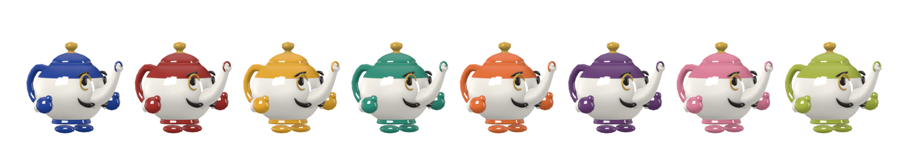
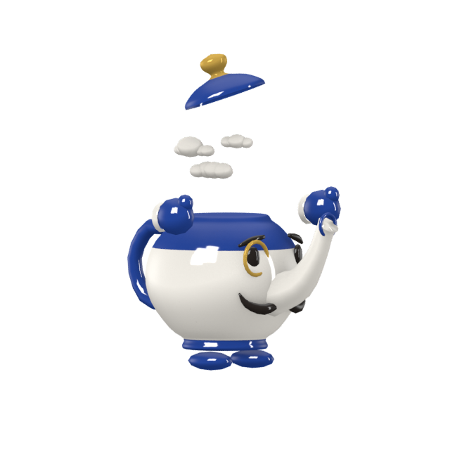

Lot 1 · Teapot, bone china · All-rounder
EARL
weight1run8.5 u/sfull hop3.6 utriangles5,468rigid parts6
Livery test: all eight player colours

Livery zone: Lid, shoulder band, foot ring, gloves, feet. Transferware came in every colour, so he is a red-and-white or green-and-white teapot as needed.
How it reads
A circle with a spout. The spout is his nose and always points the way he faces; the handle is the back. Nothing else on the roster is round with a point.
Expression
- Permanent scowl: the brows never move. Emotion is carried by the LID.
- Idle: lid rattles every 4 s. Annoyed (above 80%): rattles constantly, a wisp of steam.
- Piping stored: lid hovers 0.05 u and whistles.
- Hit: lid jumps 0.3 u and lands a beat late (secondary motion on a spring).
Pose
- Attacks lead with the spout or a glove; the body leans in after.
- Lid Pop: lid shoots 0.95 u up on a column of steam, gloves thrown up, body squashes to 0.85.
- Launched: tumbles spout over handle; the lid trails by 6 frames.
Parts (one rigid bone each, no skin weights)
body (with spout, handle, face), lid, 2 gloves, 2 feet

Lid Pop (up-special)